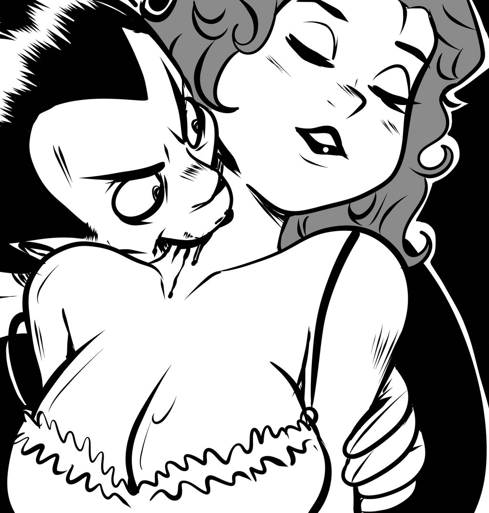

FOF_THM and FOF_UNS

Highlights
- System of Choice : Vampire 4.0
- Vampire a SOTA contributor in all 7 SPCs
- Vampire best in 5 SPCs
- Rating 1.00 in FOF_UNS_RFO_SEQ and
FOF_UNS_RFO_PEQ
- iProver best in FOF_THM_EPR,
Vampire weak, CVC4 and Isabelle better
- E best in FOF_THM_RFO_PEQ, Vampire and SRASS
also strong
- FOF_THM_RFO_SEQ has 4974 problems
SPC Analysis
SOTA Contributors and System Ratings
FOF_THM_EPR
Unbiased SPC size 290
SOTA contributors solved 282 = 0.97 SPC 0.97 attempted
SOTA contributors all solved 261 = 0.90 SPC 0.93 SOTA 21 = 1.00 SSR
iProver---1.4 C solved 279 = 0.96 SPC 0.99 SOTA 18 = 0.86 SSR
CVC4---FOF-1.5pre C solved 277 = 0.96 SPC 0.98 SOTA 16 = 0.76 SSR
Isabelle---2015 C solved 276 = 0.95 SPC 0.98 SOTA 15 = 0.71 SSR
Vampire---4.0 C solved 268 = 0.92 SPC 0.95 SOTA 7 = 0.33 SSR
FOF_THM_RFO_NEQ
Unbiased SPC size 965
SOTA contributors solved 944 = 0.98 SPC 0.98 attempted
SOTA contributors all solved 357 = 0.37 SPC 0.38 SOTA 587 = 1.00 SSR
Vampire---4.0 C solved 922 = 0.96 SPC 0.98 SOTA 565 = 0.96 SSR
E---1.9 C solved 890 = 0.92 SPC 0.94 SOTA 533 = 0.91 SSR
iProver---1.4 C solved 888 = 0.92 SPC 0.94 SOTA 531 = 0.90 SSR
VanHElsing---1.0 C solved 886 = 0.92 SPC 0.94 SOTA 529 = 0.90 SSR
ET---1.0 C solved 885 = 0.92 SPC 0.94 SOTA 528 = 0.90 SSR
iProver-Eq---0.85 C solved 852 = 0.88 SPC 0.90 SOTA 495 = 0.84 SSR
CVC4---FOF-1.5pre C solved 848 = 0.88 SPC 0.90 SOTA 491 = 0.84 SSR
Z3---4.4-TPTP C solved 833 = 0.86 SPC 0.88 SOTA 476 = 0.81 SSR
Darwin---1.4.5 C solved 794 = 0.82 SPC 0.84 SOTA 437 = 0.74 SSR
iProverMo---0.7-0.2 C solved 726 = 0.75 SPC 0.77 SOTA 369 = 0.63 SSR
SRASS---0.1 C solved 615 = 0.64 SPC 0.65 SOTA 258 = 0.44 SSR
Geo---2010C C solved 544 = 0.56 SPC 0.58 SOTA 187 = 0.32 SSR
Equinox---5.0 C solved 447 = 0.46 SPC 0.47 SOTA 90 = 0.15 SSR
FOF_THM_RFO_SEQ
Unbiased SPC size 4974
SOTA contributors solved 4171 = 0.84 SPC 0.84 attempted
SOTA contributors all solved 47 = 0.01 SPC 0.01 SOTA 4124 = 1.00 SSR
Vampire---4.0 C solved 3934 = 0.79 SPC 0.94 SOTA 3887 = 0.94 SSR
ET---1.0 C solved 3566 = 0.72 SPC 0.85 SOTA 3519 = 0.85 SSR
E---1.9 C solved 3418 = 0.69 SPC 0.82 SOTA 3371 = 0.82 SSR
VanHElsing---1.0 C solved 3372 = 0.68 SPC 0.81 SOTA 3325 = 0.81 SSR
Isabelle---2015 C solved 2987 = 0.60 SPC 0.72 SOTA 2940 = 0.71 SSR
CVC4---FOF-1.5pre C solved 2793 = 0.56 SPC 0.67 SOTA 2746 = 0.67 SSR
SRASS---0.1 C solved 2592 = 0.52 SPC 0.62 SOTA 2545 = 0.62 SSR
Fampire---1.3 C solved 2528 = 0.51 SPC 0.61 SOTA 2481 = 0.60 SSR
Princess---140704 C solved 2327 = 0.47 SPC 0.56 SOTA 2280 = 0.55 SSR
SInE---0.4 C solved 2318 = 0.47 SPC 0.56 SOTA 2271 = 0.55 SSR
SPASS---3.7 C solved 2226 = 0.45 SPC 0.53 SOTA 2179 = 0.53 SSR
iProver---1.4 C solved 2153 = 0.43 SPC 0.52 SOTA 2106 = 0.51 SSR
Z3---4.4-TPTP C solved 1979 = 0.40 SPC 0.47 SOTA 1932 = 0.47 SSR
SNARK---20120808r022 C solved 1796 = 0.36 SPC 0.43 SOTA 1749 = 0.42 SSR
Prover9---1109a C solved 1781 = 0.36 SPC 0.43 SOTA 1734 = 0.42 SSR
leanCoP---2.2 C solved 1629 = 0.33 SPC 0.39 SOTA 1582 = 0.38 SSR
Equinox---5.0 C solved 1456 = 0.29 SPC 0.35 SOTA 1409 = 0.34 SSR
Zipperpin---FOF-0.4 C solved 1388 = 0.28 SPC 0.33 SOTA 1341 = 0.33 SSR
Darwin---1.4.5 C solved 1282 = 0.26 SPC 0.31 SOTA 1235 = 0.30 SSR
Muscadet---4.4 C solved 1165 = 0.23 SPC 0.28 SOTA 1118 = 0.27 SSR
Metis---2.3 C solved 1116 = 0.22 SPC 0.27 SOTA 1069 = 0.26 SSR
Geo---2010C C solved 1006 = 0.20 SPC 0.24 SOTA 959 = 0.23 SSR
iProver-Eq---0.85 C solved 987 = 0.20 SPC 0.24 SOTA 940 = 0.23 SSR
Alt-Ergo---0.95.1 C solved 548 = 0.11 SPC 0.13 SOTA 501 = 0.12 SSR
FOF_THM_RFO_PEQ
Unbiased SPC size 284
SOTA contributors solved 257 = 0.90 SPC 0.90 attempted
SOTA contributors all solved 19 = 0.07 SPC 0.07 SOTA 238 = 1.00 SSR
VanHElsing---1.0 C solved 238 = 0.84 SPC 0.93 SOTA 219 = 0.92 SSR
E---1.9 C solved 233 = 0.82 SPC 0.91 SOTA 214 = 0.90 SSR
ET---1.0 C solved 230 = 0.81 SPC 0.89 SOTA 211 = 0.89 SSR
SRASS---0.1 C solved 218 = 0.77 SPC 0.85 SOTA 199 = 0.84 SSR
Vampire---4.0 C solved 215 = 0.76 SPC 0.84 SOTA 196 = 0.82 SSR
Isabelle-HOT---2015 C solved 204 = 0.72 SPC 0.79 SOTA 185 = 0.78 SSR
SPASS---3.7 C solved 191 = 0.67 SPC 0.74 SOTA 172 = 0.72 SSR
Fampire---1.3 C solved 184 = 0.65 SPC 0.72 SOTA 165 = 0.69 SSR
CVC4---FOF-1.5pre C solved 161 = 0.57 SPC 0.63 SOTA 142 = 0.60 SSR
Princess---140704 C solved 151 = 0.53 SPC 0.59 SOTA 132 = 0.55 SSR
iProver-Eq---0.85 C solved 150 = 0.53 SPC 0.58 SOTA 131 = 0.55 SSR
Metis---2.3 C solved 148 = 0.52 SPC 0.58 SOTA 129 = 0.54 SSR
Prover9---1109a C solved 142 = 0.50 SPC 0.55 SOTA 123 = 0.52 SSR
Bliksem---1.12 C solved 90 = 0.32 SPC 0.35 SOTA 71 = 0.30 SSR
FOF_UNS_RFO_NEQ
Unbiased SPC size 60
SOTA contributors solved 29 = 0.48 SPC 0.48 attempted
SOTA contributors all solved 16 = 0.27 SPC 0.55 SOTA 13 = 1.00 SSR
Vampire---4.0 C solved 26 = 0.43 SPC 0.90 SOTA 10 = 0.77 SSR
CVC4---FOF-1.5pre C solved 21 = 0.35 SPC 0.72 SOTA 5 = 0.38 SSR
FOF_UNS_RFO_SEQ
Unbiased SPC size 62
SOTA contributors solved 53 = 0.85 SPC 0.85 attempted
SOTA contributors all solved 52 = 0.84 SPC 0.98 SOTA 1 = 1.00 SSR
Vampire---4.0 C solved 53 = 0.85 SPC 1.00 SOTA 1 = 1.00 SSR
FOF_UNS_RFO_PEQ
Unbiased SPC size 74
SOTA contributors solved 74 = 1.00 SPC 1.00 attempted
SOTA contributors all solved 70 = 0.95 SPC 0.95 SOTA 4 = 1.00 SSR
Vampire---4.0 C solved 74 = 1.00 SPC 1.00 SOTA 4 = 1.00 SSR